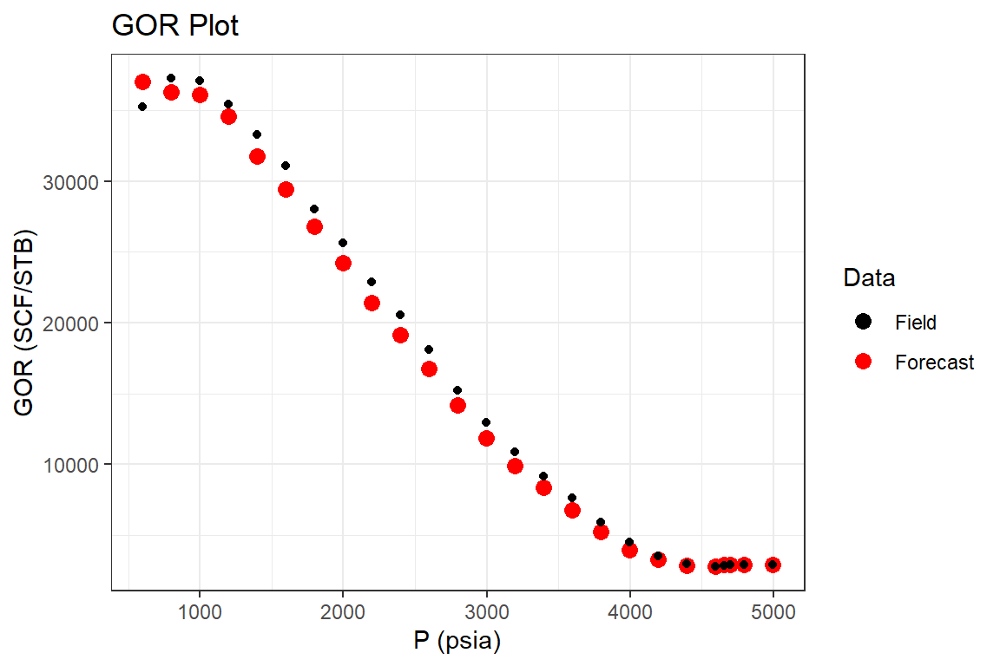

Material Balance - Volatile Oil Reservoirs
VolatileOil.Rmd
Examples
Example 1: Undersaturated Volatile Oil Reservoir (Walsh, 1995)
Part I: History Match
library(Rmbal) library(Rrelperm) library(pracma) library(minpack.lm) library(ggplot2) library(dplyr) #> #> Attaching package: 'dplyr' #> The following objects are masked from 'package:stats': #> #> filter, lag #> The following objects are masked from 'package:base': #> #> intersect, setdiff, setequal, union library(magrittr) #> #> Attaching package: 'magrittr' #> The following objects are masked from 'package:pracma': #> #> and, mod, or p_pvt <- c(5070, 4998, 4798, 4698, 4658, 4598, 4398, 4198, 3998, 3798, 3598, 3398, 3198, 2998, 2798, 2598, 2398, 2198, 1998, 1798, 1598, 1398, 1198, 998, 798, 598) Bo <- c(2.704, 2.713, 2.740, 2.754, 2.707, 2.631, 2.338, 2.204, 2.093, 1.991, 1.905, 1.828, 1.758, 1.686, 1.632, 1.580, 1.534, 1.49, 1.45, 1.413, 1.367, 1.333, 1.305, 1.272, 1.239, 1.205) # RB/STB Rv <- c(343, 343, 343, 343, 116, 111, 106, 94, 84, 74, 66, 60, 54, 49, 44, 39, 36, 33, 30, 28, 26, 25, 24.1, 23.9, 24.4, 26.4) / 1e6 # STB/SCF Rs <- c(2909, 2909, 2909, 2909, 2834, 2711, 2247, 2019, 1828, 1651, 1500, 1364, 1237, 1111, 1013, 918, 833, 752, 677, 608, 524, 461, 406, 344, 283, 212) # SCF/STB Bg <- c(9.27472e-04, 9.30559e-04, 9.39820e-04, 9.44622e-04, 0.83, 0.835, 0.853, 0.874, 0.901, 0.933, 0.97, 1.015, 1.066, 1.125, 1.196, 1.281, 1.38, 1.498, 1.642, 1.819, 2.035, 2.315, 2.689, 3.19, 3.911, 5.034) / 1000 # RB/SCF cw <- 3e-6 Bwi <- 1.05 Bw <- Bwi * exp(cw * (p_pvt[1] - p_pvt)) muo <- c(742, 735, 716, 706, 718, 739, 847, 906, 968, 1028, 1104, 1177, 1242, 1325, 1409, 1501, 1598, 1697, 1817, 1940, 2064, 2223, 2438, 2629, 2882, 3193) / 10000 mug <- c(742, 735, 716, 706, 375, 367, 350, 327, 306, 288, 271, 255, 240, 227, 214, 203, 193, 184, 175, 168, 161, 155, 150, 146, 142, 138) / 10000 muw <- rep(0.25, length(p_pvt)) liq_vol <- c(1000, 1000, 1000, 1000, 967, 847, 747, 683, 630, 584, 544, 508, 471, 433, 402, 368, 336, 305, 271, 239, 209, 177, 146, 117, 89, 63) / 1000 pvt_table <- data.frame(p = p_pvt, Bo = Bo, Rs = Rs, Rv = Rv, Bg = Bg, Bw = Bw, muo = muo, mug = mug, muw = muw) p <- c(5070, 4998, 4798, 4698, 4658, 4598, 4398, 4198, 3998, 3798, 3598, 3398, 3198, 2998, 2798, 2598, 2398, 2198, 1998, 1798, 1598, 1398, 1198, 998, 798) We <- rep(0, length.out = length(p)) Np <- c(0, 36, 130, 184, 227, 302, 582, 808, 1022, 1227, 1388, 1528, 1646, 1764, 1861, 1947, 2022, 2097, 2151, 2215, 2269, 2323, 2366, 2420, 2463) * 1e6 / 1000 Rp <- c(0, 2909.000, 2909.000, 2909.000, 2894.273, 2887.417, 2847.079, 2928.218, 3072.407, 3286.064, 3578.530, 3918.848, 4290.401, 4661.565, 5053.735, 5470.981, 5889.713, 6294.230, 6760.576, 7172.009, 7640.811, 8059.836, 8499.155, 8900.413, 9329.679) Wp <- rep(0, length.out = length(p)) Wi <- rep(0, length.out = length(p)) Gi <- rep(0, length.out = length(p)) wf <- rep(1, length.out = length(p)) mbal_optim_oil_lst <- mbal_optim_param_oil(input_unit = "Field", output_unit = "Field", unknown_param = "N", aquifer_model = NULL, m = 0, phi = 0.1, swi = 0.2, Np = Np, Rp = Rp, Wp = Wp, Gi = Gi, Wi = Wi, We = We, pb = 4698, p = p, pvt = pvt_table, cf = 2e-6, wf = wf, sorg = 0.15, sorw = 0.0) time_lst <- mbal_time(c(1:length(p)), "year") # a number of plots will be automatically generated for quality check optim_results <- mbal_optim_oil(mbal_optim_oil_lst, time_lst)
glimpse(optim_results) #> List of 18 #> $ input_unit : chr "Field" #> $ output_unit: chr "Field" #> $ N : num 10179044 #> $ m : num 0 #> $ phi : num 0.1 #> $ swi : num 0.2 #> $ pb : num 4698 #> $ p : num [1:25] 5070 4998 4798 4698 4658 ... #> $ cf : num [1:25] 2e-06 2e-06 2e-06 2e-06 2e-06 2e-06 2e-06 2e-06 2e-06 2e-06 ... #> $ pvt :'data.frame': 26 obs. of 9 variables: #> ..$ p : num [1:26] 5070 4998 4798 4698 4658 ... #> ..$ Bo : num [1:26] 2.7 2.71 2.74 2.75 2.71 ... #> ..$ Rs : num [1:26] 2909 2909 2909 2909 2834 ... #> ..$ Rv : num [1:26] 0.000343 0.000343 0.000343 0.000343 0.000116 0.000111 0.000106 0.000094 0.000084 0.000074 ... #> ..$ Bg : num [1:26] 9.27e-07 9.31e-07 9.40e-07 9.45e-07 8.30e-04 ... #> ..$ Bw : num [1:26] 1.05 1.05 1.05 1.05 1.05 ... #> ..$ muo: num [1:26] 0.0742 0.0735 0.0716 0.0706 0.0718 ... #> ..$ mug: num [1:26] 0.0742 0.0735 0.0716 0.0706 0.0375 0.0367 0.035 0.0327 0.0306 0.0288 ... #> ..$ muw: num [1:26] 0.25 0.25 0.25 0.25 0.25 0.25 0.25 0.25 0.25 0.25 ... #> $ prod :'data.frame': 25 obs. of 3 variables: #> ..$ Np: num [1:25] 0 36000 130000 184000 227000 ... #> ..$ Rp: num [1:25] 2909 2909 2909 2909 2894 ... #> ..$ Wp: num [1:25] 0 0 0 0 0 0 0 0 0 0 ... #> $ inj :'data.frame': 25 obs. of 2 variables: #> ..$ Gi: num [1:25] 0 0 0 0 0 0 0 0 0 0 ... #> ..$ Wi: num [1:25] 0 0 0 0 0 0 0 0 0 0 ... #> $ We : num [1:25] 0 0 0 0 0 0 0 0 0 0 ... #> $ aquifer :List of 3 #> ..$ input_unit : chr "Field" #> ..$ output_unit: chr "Field" #> ..$ We : num [1:25] 0 0 0 0 0 0 0 0 0 0 ... #> ..- attr(*, "class")= chr [1:2] "NoA" "aquifer" #> $ wf : num [1:25] 1 1 1 1 1 1 1 1 1 1 ... #> $ sorw : num 0 #> $ sorg : num 0.15 #> $ p_est : num [1:25] 5070 4998 4822 4722 4659 ... #> - attr(*, "class")= chr [1:2] "volumetric_oil" "mbal_oil"
Part II: Reservoir Performance
mbal_results <- mbal_perform_oil(optim_results, time_lst) mbal_results #> P (psia) Eo (bbl/STB) Eg (bbl/SCF) Ew (bbl/STB) Ef (bbl/bbl) Eowf (bbl/STB) #> 1 5070 0.00000000 0.000000e+00 0.0000000000 0.000000 0.000000000 #> 2 4998 0.00900000 3.087000e-09 0.0002268245 0.000144 0.009632752 #> 3 4798 0.03600000 1.234800e-08 0.0008571497 0.000544 0.038390561 #> 4 4698 0.05000000 1.715000e-08 0.0011724541 0.000744 0.053269557 #> 5 4658 0.06065178 9.490492e-04 0.0012986024 0.000824 0.064272948 #> 6 4598 0.08078216 9.559716e-04 0.0014878532 0.000944 0.084930779 #> 7 4398 0.15987871 9.831409e-04 0.0021189352 0.001344 0.165785617 #> 8 4198 0.23248964 1.008110e-03 0.0027503959 0.001744 0.240155090 #> 9 3998 0.31513867 1.036533e-03 0.0033822357 0.002144 0.324562909 #> 10 3798 0.41292681 1.070159e-03 0.0040144547 0.002544 0.424110074 #> 11 3598 0.52128461 1.107419e-03 0.0046470531 0.002944 0.534227143 #> 12 3398 0.64739396 1.150783e-03 0.0052800312 0.003344 0.662096016 #> 13 3198 0.79384378 1.201136e-03 0.0059133893 0.003744 0.810305597 #> 14 2998 0.96411435 1.259675e-03 0.0065471274 0.004144 0.982336174 #> 15 2798 1.15890388 1.326652e-03 0.0071812459 0.004544 1.178885954 #> 16 2598 1.39393260 1.407462e-03 0.0078157450 0.004944 1.415675174 #> 17 2398 1.66525871 1.500751e-03 0.0084506249 0.005344 1.688762027 #> 18 2198 1.99065298 1.612626e-03 0.0090858858 0.005744 2.015917278 #> 19 1998 2.38781731 1.749177e-03 0.0097215280 0.006144 2.414842842 #> 20 1798 2.87439390 1.916468e-03 0.0103575517 0.006544 2.903180912 #> 21 1598 3.49757356 2.130698e-03 0.0109939571 0.006944 3.528122294 #> 22 1398 4.27966431 2.399578e-03 0.0116307445 0.007344 4.311975010 #> 23 1198 5.31857518 2.756755e-03 0.0122679141 0.007744 5.352648105 #> 24 998 6.73955521 3.245262e-03 0.0129054661 0.008144 6.775390588 #> 25 798 8.79675730 3.952480e-03 0.0135434007 0.008544 8.834355395 #> Egwf (bbl/SCF) Et (bbl) F (bbl) We Igd Isd Inwd Ifwd Iawd #> 1 0.000000e+00 0.00 0.0 0 NA NA NA NA NA #> 2 3.304034e-09 98052.21 97668.0 0 0 0.9343125 0 0.065687540 0 #> 3 1.316796e-08 390779.22 356200.0 0 0 0.9377305 0 0.062269502 0 #> 4 1.827146e-08 542233.18 506736.0 0 0 0.9386224 0 0.061377592 0 #> 5 9.490504e-04 654237.18 625006.2 0 0 0.9436595 0 0.056340540 0 #> 6 9.559730e-04 864514.16 835941.8 0 0 0.9511530 0 0.048847003 0 #> 7 9.831429e-04 1687539.13 1638149.6 0 0 0.9643702 0 0.035629814 0 #> 8 1.008112e-03 2444549.29 2385463.6 0 0 0.9680812 0 0.031918753 0 #> 9 1.036536e-03 3303740.22 3228637.4 0 0 0.9709633 0 0.029036699 0 #> 10 1.070163e-03 4317035.22 4238553.9 0 0 0.9736312 0 0.026368777 0 #> 11 1.107423e-03 5437921.74 5347490.3 0 0 0.9757733 0 0.024226656 0 #> 12 1.150788e-03 6739504.66 6642399.0 0 0 0.9777947 0 0.022205321 0 #> 13 1.201141e-03 8248136.54 8123499.0 0 0 0.9796844 0 0.020315565 0 #> 14 1.259682e-03 9999243.40 9878649.0 0 0 0.9814505 0 0.018549478 0 #> 15 1.326659e-03 11999932.31 11885236.6 0 0 0.9830500 0 0.016949964 0 #> 16 1.407470e-03 14410220.26 14287009.0 0 0 0.9846416 0 0.015358446 0 #> 17 1.500759e-03 17189983.43 17065907.5 0 0 0.9860825 0 0.013917481 0 #> 18 1.612635e-03 20520111.21 20391408.7 0 0 0.9874676 0 0.012532409 0 #> 19 1.749186e-03 24580792.18 24470200.4 0 0 0.9888086 0 0.011191425 0 #> 20 1.916478e-03 29551607.01 29449581.2 0 0 0.9900843 0 0.009915679 0 #> 21 2.130709e-03 35912913.01 35835017.5 0 0 0.9913414 0 0.008658638 0 #> 22 2.399589e-03 43891784.50 43842502.2 0 0 0.9925068 0 0.007493249 0 #> 23 2.756767e-03 54484841.99 54478300.6 0 0 0.9936344 0 0.006365619 0 #> 24 3.245274e-03 68967000.71 69044893.8 0 0 0.9947109 0 0.005289050 0 #> 25 3.952493e-03 89925294.62 90124076.0 0 0 0.9957441 0 0.004255895 0 #> Itot RF_oil RF_gas SOo SGo SWo SOT SGT #> 1 NA 0.00000000 0.00000000 0.8000000 0.00000000 0.2 0.8000000 -5.551115e-17 #> 2 1 0.00355059 0.00355059 0.8000000 0.00000000 0.2 0.8000000 -5.551115e-17 #> 3 1 0.01401115 0.01401115 0.8000000 0.00000000 0.2 0.8000000 -5.551115e-17 #> 4 1 0.01934261 0.01934261 0.8000000 0.00000000 0.2 0.8000000 -5.551115e-17 #> 5 1 0.02334370 0.02322552 0.7726982 0.02730184 0.2 0.7726982 2.730184e-02 #> 6 1 0.03068287 0.03045522 0.7312697 0.06873030 0.2 0.7312697 6.873030e-02 #> 7 1 0.05890013 0.05764639 0.5916258 0.20837417 0.2 0.5916258 2.083742e-01 #> 8 1 0.08134490 0.08188230 0.5382687 0.26173128 0.2 0.5382687 2.617313e-01 #> 9 1 0.10273786 0.10850894 0.4981607 0.30183932 0.2 0.4981607 3.018393e-01 #> 10 1 0.12277373 0.13868763 0.4651739 0.33482608 0.2 0.4651739 3.348261e-01 #> 11 1 0.13866454 0.17057931 0.4401078 0.35989223 0.2 0.4401078 3.598922e-01 #> 12 1 0.15230683 0.20517955 0.4184090 0.38159099 0.2 0.4184090 3.815910e-01 #> 13 1 0.16418578 0.24215292 0.4004292 0.39957082 0.2 0.4004292 3.995708e-01 #> 14 1 0.17541275 0.28109245 0.3816518 0.41834821 0.2 0.3816518 4.183482e-01 #> 15 1 0.18459092 0.32068532 0.3686669 0.43133310 0.2 0.3686669 4.313331e-01 #> 16 1 0.19292488 0.36283547 0.3567198 0.44328023 0.2 0.3567198 4.432802e-01 #> 17 1 0.20008762 0.40510782 0.3455049 0.45449510 0.2 0.3455049 4.544951e-01 #> 18 1 0.20731175 0.44856233 0.3347411 0.46525886 0.2 0.3347411 4.652589e-01 #> 19 1 0.21227153 0.49332342 0.3257774 0.47422259 0.2 0.3257774 4.742226e-01 #> 20 1 0.21835780 0.53835136 0.3165637 0.48343634 0.2 0.3165637 4.834363e-01 #> 21 1 0.22339349 0.58676776 0.3056511 0.49434893 0.2 0.3056511 4.943489e-01 #> 22 1 0.22847049 0.63301295 0.2971371 0.50286286 0.2 0.2971371 5.028629e-01 #> 23 1 0.23246623 0.67919098 0.2903911 0.50960890 0.2 0.2903911 5.096089e-01 #> 24 1 0.23747513 0.72658190 0.2819238 0.51807620 0.2 0.2819238 5.180762e-01 #> 25 1 0.24143401 0.77432171 0.2738030 0.52619703 0.2 0.2738030 5.261970e-01 #> SWT qo (STB/day) qg (SCF/day) qw (STB/day) fg fw GOR (SCF/STB) #> 1 0.2 0.00000 0.0 0 0.00000000 0 2909.000 #> 2 0.2 98.63014 286915.1 0 0.00000000 0 2909.000 #> 3 0.2 257.53425 749167.1 0 0.00000000 0 2909.000 #> 4 0.2 147.94521 430372.6 0 0.00000000 0 2909.000 #> 5 0.2 117.80822 333545.1 0 0.08888775 0 2831.255 #> 6 0.2 205.47945 589041.0 0 0.14350870 0 2866.666 #> 7 0.2 767.12329 2150685.1 0 0.27831610 0 2803.572 #> 8 0.2 619.17808 1942466.2 0 0.40342932 0 3137.169 #> 9 0.2 586.30137 2120547.4 0 0.51934696 0 3616.822 #> 10 0.2 561.64384 2443837.2 0 0.62670587 0 4351.222 #> 11 0.2 441.09589 2561641.4 0 0.73539791 0 5807.448 #> 12 0.2 383.56164 2797260.6 0 0.80161398 0 7292.858 #> 13 0.2 323.28767 2942466.6 0 0.85220494 0 9101.697 #> 14 0.2 323.28767 3180823.6 0 0.87494696 0 9838.988 #> 15 0.2 265.75342 3238356.6 0 0.90470566 0 12185.569 #> 16 0.2 235.61644 3416436.1 0 0.92689231 0 14499.990 #> 17 0.2 205.47945 3443834.7 0 0.94224041 0 16759.996 #> 18 0.2 205.47945 3534248.3 0 0.94932040 0 17200.008 #> 19 0.2 147.94521 3679448.4 0 0.96844932 0 24870.346 #> 20 0.2 175.34247 3682194.4 0 0.96692758 0 21000.015 #> 21 0.2 147.94521 3975343.1 0 0.97794933 0 26870.375 #> 22 0.2 147.94521 3797257.2 0 0.97974542 0 25666.646 #> 23 0.2 117.80822 3797264.9 0 0.98624528 0 32232.598 #> 24 0.2 147.94521 3917804.7 0 0.98636892 0 26481.458 #> 25 0.2 117.80822 3945205.3 0 0.99142749 0 33488.370 #> krg/kro #> 1 0.00000000 #> 2 0.00000000 #> 3 0.00000000 #> 4 0.00000000 #> 5 0.00000000 #> 6 0.03598525 #> 7 0.11938924 #> 8 0.22697201 #> 9 0.34965742 #> 10 0.52284561 #> 11 0.87300577 #> 12 1.26811100 #> 13 1.81222420 #> 14 1.92655723 #> 15 2.68104037 #> 16 3.42752515 #> 17 4.36286170 #> 18 4.14657412 #> 19 10.39295962 #> 20 5.51774285 #> 21 10.15155441 #> 22 8.51771422 #> 23 18.07776677 #> 24 9.91637411 #> 25 28.23865727
Part III: Reservoir Forecast
# Step I: generating a set of pseudo relative permeability curves using # laboratory 'Kr' values sg_lab <- c(0.05, 0.152, 0.248, 0.352, 0.448, 0.552, 0.65) krg_lab <- c(0, 0.05, 0.09, 0.18, 0.3, 0.5, 1) kro_lab <- c(1, 0.6, 0.35, 0.13, 0.04, 0.01, 0) swcrit_lab <- 0.2 sgcrit_lab <- 0.05 sorgr_lab <- 0.15 fun_kr <- function(x, swcrit, sgcrit, sorg, sg, krg, kro) { kr_est <- Rrelperm::kr2p_gl(SWCON = swcrit, SOIRG = sorg, SORG = sorg, SGCON = sgcrit, SGCRIT = sgcrit, KRGCL = 1, KROGCG = 1, NG = x[1], NOG = x[2], NP = 101) krg_est_sub <- approx(x = kr_est[,1], y = kr_est[,3], xout = sg, rule = 2)$y kro_est_sub <- approx(x = kr_est[,1], y = kr_est[,4], xout = sg, rule = 2)$y error <- (krg - krg_est_sub) ^ 2 + (kro - kro_est_sub) ^ 2 return(error) } par <- c(2, 2) opt_results <- minpack.lm::nls.lm(par = par, fn = fun_kr, swcrit = swcrit_lab, sgcrit = sgcrit_lab, sorg = sorgr_lab, sg = sg_lab, krg = krg_lab, kro = kro_lab, lower = c(0.1,0.1), upper = c(10,10)) sol <- opt_results$par sol #> [1] 3.157478 2.740570 rel_perm <- as.data.frame(Rrelperm::kr2p_gl(SWCON = swcrit_lab, SOIRG = sorgr_lab, SORG = sorgr_lab, SGCON = sgcrit_lab, SGCRIT = sgcrit_lab, KRGCL = 1, KROGCG = 1, NG = sol[1], NOG = sol[2], NP = 101)) colnames(rel_perm) <- c("Sg", "Sl", "Krg", "Krog") p_forecast <- p Gi_forecast <- Gi wf_forecast <- wf time_lst_forecast <- mbal_time(c(1:length(p_forecast)), "year") forecast_lst <- mbal_forecast_param_oil(input_unit = "Field", output_unit = "Field", N = 10179044, m = 0.0, phi = 0.1, swi = 0.2, Gi = Gi_forecast, pb = 4698, p = p_forecast, pvt = pvt_table, cf = 2e-6, wf = wf_forecast, sorg = 0.15, rel_perm = rel_perm) glimpse(forecast_lst) #> List of 14 #> $ input_unit : chr "Field" #> $ output_unit: chr "Field" #> $ N : num 10179044 #> $ m : num 0 #> $ phi : num 0.1 #> $ swi : num 0.2 #> $ pb : num 4698 #> $ p : num [1:25] 5070 4998 4798 4698 4658 ... #> $ cf : num [1:25] 2e-06 2e-06 2e-06 2e-06 2e-06 2e-06 2e-06 2e-06 2e-06 2e-06 ... #> $ pvt :'data.frame': 26 obs. of 9 variables: #> ..$ p : num [1:26] 5070 4998 4798 4698 4658 ... #> ..$ Bo : num [1:26] 2.7 2.71 2.74 2.75 2.71 ... #> ..$ Rs : num [1:26] 2909 2909 2909 2909 2834 ... #> ..$ Rv : num [1:26] 0.000343 0.000343 0.000343 0.000343 0.000116 0.000111 0.000106 0.000094 0.000084 0.000074 ... #> ..$ Bg : num [1:26] 9.27e-07 9.31e-07 9.40e-07 9.45e-07 8.30e-04 ... #> ..$ Bw : num [1:26] 1.05 1.05 1.05 1.05 1.05 ... #> ..$ muo: num [1:26] 0.0742 0.0735 0.0716 0.0706 0.0718 ... #> ..$ mug: num [1:26] 0.0742 0.0735 0.0716 0.0706 0.0375 0.0367 0.035 0.0327 0.0306 0.0288 ... #> ..$ muw: num [1:26] 0.25 0.25 0.25 0.25 0.25 0.25 0.25 0.25 0.25 0.25 ... #> $ inj :'data.frame': 25 obs. of 1 variable: #> ..$ Gi: num [1:25] 0 0 0 0 0 0 0 0 0 0 ... #> $ wf : num [1:25] 1 1 1 1 1 1 1 1 1 1 ... #> $ sorg : num 0.15 #> $ rel_perm :'data.frame': 101 obs. of 4 variables: #> ..$ Sg : num [1:101] 0 0.01 0.02 0.03 0.04 0.05 0.06 0.07 0.08 0.09 ... #> ..$ Sl : num [1:101] 1 0.99 0.98 0.97 0.96 0.95 0.94 0.93 0.92 0.91 ... #> ..$ Krg : num [1:101] 0 0 0 0 0 ... #> ..$ Krog: num [1:101] 1 1 1 1 1 ... #> - attr(*, "class")= chr [1:2] "volumetric_forecast_oil" "forecast_oil" forecast_results <- mbal_forecast_oil(forecast_lst, time_lst_forecast) forecast_results #> P (psia) SOo SGo SWo SOT SGT SWT GOR (SCF/STB) #> 1 5070 0.8000000 0.00000000 0.2 0.8000000 -5.551115e-17 0.2 2909.000 #> 2 4998 0.8000000 0.00000000 0.2 0.8000000 -5.551115e-17 0.2 2909.000 #> 3 4798 0.8000000 0.00000000 0.2 0.8000000 -5.551115e-17 0.2 2909.000 #> 4 4698 0.8000000 0.00000000 0.2 0.8000000 -5.551115e-17 0.2 2909.000 #> 5 4658 0.7714246 0.02857536 0.2 0.7714246 2.857536e-02 0.2 2834.000 #> 6 4598 0.7298841 0.07011589 0.2 0.7298841 7.011589e-02 0.2 2711.109 #> 7 4398 0.5878680 0.21213196 0.2 0.5878680 2.121320e-01 0.2 2434.726 #> 8 4198 0.5315316 0.26846844 0.2 0.5315316 2.684684e-01 0.2 2756.571 #> 9 3998 0.4897793 0.31022073 0.2 0.4897793 3.102207e-01 0.2 3575.263 #> 10 3798 0.4570624 0.34293756 0.2 0.4570624 3.429376e-01 0.2 4839.089 #> 11 3598 0.4321537 0.36784626 0.2 0.4321537 3.678463e-01 0.2 6409.500 #> 12 3398 0.4109145 0.38908553 0.2 0.4109145 3.890855e-01 0.2 8194.483 #> 13 3198 0.3932607 0.40673934 0.2 0.3932607 4.067393e-01 0.2 10126.350 #> 14 2998 0.3756798 0.42432023 0.2 0.3756798 4.243202e-01 0.2 12395.082 #> 15 2798 0.3634578 0.43654224 0.2 0.3634578 4.365422e-01 0.2 14607.129 #> 16 2598 0.3520820 0.44791803 0.2 0.3520820 4.479180e-01 0.2 17168.929 #> 17 2398 0.3413416 0.45865837 0.2 0.3413416 4.586584e-01 0.2 19506.586 #> 18 2198 0.3313004 0.46869960 0.2 0.3313004 4.686996e-01 0.2 22051.752 #> 19 1998 0.3223430 0.47765703 0.2 0.3223430 4.776570e-01 0.2 24916.102 #> 20 1798 0.3137723 0.48622770 0.2 0.3137723 4.862277e-01 0.2 27390.853 #> 21 1598 0.3031383 0.49686166 0.2 0.3031383 4.968617e-01 0.2 30423.569 #> 22 1398 0.2951001 0.50489993 0.2 0.2951001 5.048999e-01 0.2 32402.069 #> 23 1198 0.2884740 0.51152604 0.2 0.2884740 5.115260e-01 0.2 34169.991 #> 24 998 0.2805608 0.51943924 0.2 0.2805608 5.194392e-01 0.2 35108.083 #> 25 798 0.2725757 0.52742427 0.2 0.2725757 5.274243e-01 0.2 35090.204 #> RF_oil RF_gas Liq_volume Igd Isd Inwd Ifwd Iawd Itot #> 1 0.00000000 0.00000000 1.0000000 NA NA NA NA NA NA #> 2 0.00355059 0.00355059 1.0000000 0 0.9343125 0 0.065687540 0 1 #> 3 0.01401115 0.01401115 1.0000000 0 0.9377305 0 0.062269502 0 1 #> 4 0.01934261 0.01934261 1.0000000 0 0.9386224 0 0.061377592 0 1 #> 5 0.02328927 0.02323839 0.9664563 0 0.9436595 0 0.056340540 0 1 #> 6 0.03082627 0.03042188 0.9150753 0 0.9511530 0 0.048847003 0 1 #> 7 0.06103050 0.05713655 0.7411780 0 0.9643702 0 0.035629814 0 1 #> 8 0.08726159 0.08054208 0.6730561 0 0.9680812 0 0.031918753 0 1 #> 9 0.11129643 0.10669963 0.6188753 0 0.9709633 0 0.029036699 0 1 #> 10 0.13213760 0.13684142 0.5710297 0 0.9736312 0 0.026368777 0 1 #> 11 0.14864198 0.16875118 0.5296838 0 0.9757733 0 0.024226656 0 1 #> 12 0.16247242 0.20346749 0.4903751 0 0.9777947 0 0.022205321 0 1 #> 13 0.17425986 0.24058605 0.4539689 0 0.9796844 0 0.020315565 0 1 #> 14 0.18439039 0.27980123 0.4168104 0 0.9814505 0 0.018549478 0 1 #> 15 0.19296739 0.31960837 0.3855909 0 0.9830500 0 0.016949964 0 1 #> 16 0.20071944 0.36194763 0.3545102 0 0.9846416 0 0.015358446 0 1 #> 17 0.20744963 0.40437337 0.3240391 0 0.9860825 0 0.013917481 0 1 #> 18 0.21356046 0.44802339 0.2942159 0 0.9874676 0 0.012532409 0 1 #> 19 0.21911022 0.49282580 0.2653071 0 0.9888086 0 0.011191425 0 1 #> 20 0.22413581 0.53800862 0.2366965 0 0.9900843 0 0.009915679 0 1 #> 21 0.22901333 0.58647726 0.2065704 0 0.9913414 0 0.008658638 0 1 #> 22 0.23330486 0.63281937 0.1790563 0 0.9925068 0 0.007493249 0 1 #> 23 0.23734570 0.67905637 0.1527566 0 0.9936344 0 0.006365619 0 1 #> 24 0.24133076 0.72650864 0.1263693 0 0.9947109 0 0.005289050 0 1 #> 25 0.24528974 0.77427656 0.1007812 0 0.9957441 0 0.004255895 0 1 p1 <- forecast_results %>% ggplot(aes(`P (psia)`, SOo, color = "Forecast")) + geom_point(size = 3) + geom_point(data = mbal_results, aes(`P (psia)`, SOo, color = "Field"))+ scale_color_manual(name="Data", values=c("Forecast" = "red", "Field" = "black")) + ggtitle("Oil Saturation Plot") + theme_bw() p1
p2 <- forecast_results %>% ggplot(aes(`P (psia)`, `GOR (SCF/STB)`, color = "Forecast")) + geom_point(size = 3) + geom_point(data = mbal_results, aes(`P (psia)`, `GOR (SCF/STB)`, color = "Field")) + scale_color_manual(name="Data", values=c("Forecast" = "red", "Field" = "black")) + ggtitle("GOR Plot") + theme_bw() p2
p3 <- forecast_results %>% ggplot(aes(`P (psia)`, `RF_oil`, color = "Forecast")) + geom_point(size = 3) + geom_point(data = mbal_results, aes(`P (psia)`, `RF_oil`, color = "Field")) + scale_color_manual(name="Data", values=c("Forecast" = "red", "Field" = "black")) + ggtitle("Oil Recovery Plot") + theme_bw() p3
liq_vol_CCE <- data.frame(P = p_pvt, liq_vol = liq_vol) p4 <- forecast_results %>% ggplot(aes(`P (psia)`, `Liq_volume`, color = "Forecast")) + geom_point(size = 3) + geom_point(data = liq_vol_CCE, aes(P, `liq_vol`, color = "Lab")) + scale_color_manual(name="Data", values=c("Forecast" = "red", "Lab" = "black")) + ggtitle("CCE Liquid Volume Plot") + theme_bw() p4

Example 2: Undersaturated Volatile Oil Reservoir with Water Influx (Walsh, Ansah, & Raghavan, 1994)
Part I: History Match
library(Rmbal) library(Rrelperm) library(pracma) library(ggplot2) library(dplyr) library(magrittr) p_pvt <- c(4998, 4798, 4698, 4658, 4598, 4398, 4198, 3998, 3798, 3598, 3398, 3198, 2998, 2798, 2598, 2398, 2198, 1998, 1798, 1598, 1398, 1198, 998, 798, 598) # psia Bo <- c(2.71261, 2.73953, 2.75371, 2.70727, 2.63143, 2.33771, 2.20391, 2.09309, 1.99116, 1.90524, 1.82832, 1.75726, 1.68592, 1.63232, 1.58028, 1.53414, 1.49008, 1.44996, 1.41304, 1.36658, 1.33283, 1.30465, 1.27171, 1.23937, 1.20516) # RB/STB Rs <- c(2909, 2909, 2909, 2834, 2711, 2247, 2019, 1828, 1651, 1500, 1364, 1237, 1111, 1013, 918, 833, 752, 677, 608, 524, 461, 406, 344, 283, 212) #SCF/STB Bg <- c(0.932, 0.942, 0.947, 0.83, 0.835, 0.853, 0.874, 0.901, 0.933, 0.97, 1.015, 1.066, 1.125, 1.196, 1.281, 1.38, 1.498, 1.642, 1.819, 2.035, 2.315, 2.689, 3.19, 3.911, 5.034) / 1000 # RB/SCF Rv <- c(343, 343, 343, 116, 111, 106, 94, 84, 74, 66, 60, 54, 49, 44, 39, 36, 33, 30, 28, 26, 25, 24.1, 23.9, 24.4, 26.4) / 1e6 # STB/SCF cw <- 3e-6 Bwi <- 1.05 Bw <- Bwi * exp(cw * (p_pvt[1] - p_pvt)) muo <- c(735, 716, 706, 718, 739, 847, 906, 968, 1028, 1104, 1177, 1242, 1325, 1409, 1501, 1598, 1697, 1817, 1940, 2064, 2223, 2438, 2629, 2882, 3193) / 10000 mug <- c(735, 716, 706, 375, 367, 350, 327, 306, 288, 271, 255, 240, 227, 214, 203, 193, 184, 175, 168, 161, 155, 150, 146, 142, 138) / 10000 muw <- rep(0.25, length(p_pvt)) pvt_table <- data.frame(p = p_pvt, Bo = Bo, Rs = Rs, Rv = Rv, Bg = Bg, Bw = Bw, muo = muo, mug = mug, muw = muw) p <- c(4998, 4798, 4698, 4658, 4598, 4398, 4198, 3998, 3798, 3598, 3398, 3198, 2998, 2798, 2598, 2398, 2198, 1998, 1798, 1598, 1398, 1198, 998, 798, 598) # psia Np <- c(0, 1.05, 1.63, 2.08, 2.88, 5.87, 8.36, 10.64, 12.63, 14.25, 15.65, 16.88, 17.98, 18.9, 19.71, 20.41, 21.03, 21.59, 22.09, 22.57, 22.98, 23.34, 23.69, 24.03, 24.38) / 100 Rp <- c(0, 2.909, 2.909, 2.909, 2.87, 2.86, 2.97, 3.18, 3.5, 3.87, 4.27, 4.68, 5.12, 5.56, 6.02, 6.47, 6.91, 7.36, 7.8, 8.26, 8.68, 9.08, 9.48, 9.86, 10.25) * 1000 # SCF/STB Wp <- rep(0, length.out = length(p)) We <- c(0, 0.0016, 0.0037, 0.005, 0.0067, 0.0149, 0.0261, 0.03096, 0.0559, 0.0742, 0.0952, 0.1179, 0.1424, 0.1688, 0.1966, 0.2261, 0.257, 0.2892, 0.3224, 0.357, 0.3923, 0.4285, 0.4658, 0.5038, 0.5425) # RB Gi <- rep(0, length.out = length(p)) Wi <- rep(0, length.out = length(p)) wf <- rep(1, length.out = length(p)) mbal_optim_oil_lst <- mbal_optim_param_oil(input_unit = "Field", output_unit = "Field", unknown_param = "N", aquifer_model = NULL, m = 0, phi = 0.1, swi = 0.2, Np = Np, Rp = Rp, Wp = Wp, Gi = Gi, Wi = Wi, We = We, pb = 4698, p = p, pvt = pvt_table, cf = 2e-6, wf = wf, sorg = 0.15, sorw = 0.15) time_lst <- mbal_time(c(1:length(p)), "year") # a number of plots will be automatically generated for quality check optim_results <- mbal_optim_oil(mbal_optim_oil_lst, time_lst)
glimpse(optim_results) #> List of 18 #> $ input_unit : chr "Field" #> $ output_unit: chr "Field" #> $ N : num 0.995 #> $ m : num 0 #> $ phi : num 0.1 #> $ swi : num 0.2 #> $ pb : num 4698 #> $ p : num [1:25] 4998 4798 4698 4658 4598 ... #> $ cf : num [1:25] 2e-06 2e-06 2e-06 2e-06 2e-06 2e-06 2e-06 2e-06 2e-06 2e-06 ... #> $ pvt :'data.frame': 25 obs. of 9 variables: #> ..$ p : num [1:25] 4998 4798 4698 4658 4598 ... #> ..$ Bo : num [1:25] 2.71 2.74 2.75 2.71 2.63 ... #> ..$ Rs : num [1:25] 2909 2909 2909 2834 2711 ... #> ..$ Rv : num [1:25] 0.000343 0.000343 0.000343 0.000116 0.000111 0.000106 0.000094 0.000084 0.000074 0.000066 ... #> ..$ Bg : num [1:25] 0.000932 0.000942 0.000947 0.00083 0.000835 0.000853 0.000874 0.000901 0.000933 0.00097 ... #> ..$ Bw : num [1:25] 1.05 1.05 1.05 1.05 1.05 ... #> ..$ muo: num [1:25] 0.0735 0.0716 0.0706 0.0718 0.0739 ... #> ..$ mug: num [1:25] 0.0735 0.0716 0.0706 0.0375 0.0367 0.035 0.0327 0.0306 0.0288 0.0271 ... #> ..$ muw: num [1:25] 0.25 0.25 0.25 0.25 0.25 0.25 0.25 0.25 0.25 0.25 ... #> $ prod :'data.frame': 25 obs. of 3 variables: #> ..$ Np: num [1:25] 0 0.0105 0.0163 0.0208 0.0288 ... #> ..$ Rp: num [1:25] 2909 2909 2909 2909 2870 ... #> ..$ Wp: num [1:25] 0 0 0 0 0 0 0 0 0 0 ... #> $ inj :'data.frame': 25 obs. of 2 variables: #> ..$ Gi: num [1:25] 0 0 0 0 0 0 0 0 0 0 ... #> ..$ Wi: num [1:25] 0 0 0 0 0 0 0 0 0 0 ... #> $ We : num [1:25] 0 0.0016 0.0037 0.005 0.0067 ... #> $ aquifer :List of 3 #> ..$ input_unit : chr "Field" #> ..$ output_unit: chr "Field" #> ..$ We : num [1:25] 0 0.0016 0.0037 0.005 0.0067 ... #> ..- attr(*, "class")= chr [1:2] "We" "aquifer" #> $ wf : num [1:25] 1 1 1 1 1 1 1 1 1 1 ... #> $ sorw : num 0.15 #> $ sorg : num 0.15 #> $ p_est : num [1:25] 4998 4808 4714 4667 4607 ... #> - attr(*, "class")= chr [1:2] "water_drive_oil" "mbal_oil"
Part II: Reservoir Performance
mbal_results <- mbal_perform_oil(optim_results, time_lst) mbal_results #> P (psia) Eo (bbl/STB) Eg (bbl/SCF) Ew (bbl/STB) Ef (bbl/bbl) Eowf (bbl/STB) #> 1 4998 0.00000000 0.000000e+00 0.0000000000 0.00000 0.00000000 #> 2 4798 0.02692000 1.000000e-05 0.0006301890 0.00040 0.02868332 #> 3 4698 0.04110000 1.500000e-05 0.0009454254 0.00060 0.04374507 #> 4 4658 0.05230828 1.806798e-05 0.0010715464 0.00068 0.05530606 #> 5 4598 0.07258865 2.504177e-05 0.0012607563 0.00080 0.07611553 #> 6 4398 0.15100542 5.197814e-05 0.0018917020 0.00120 0.15629611 #> 7 4198 0.22379893 7.700963e-05 0.0025230264 0.00160 0.23085367 #> 8 3998 0.30660902 1.054881e-04 0.0031547297 0.00200 0.31542806 #> 9 3798 0.40445984 1.391356e-04 0.0037868122 0.00240 0.41504342 #> 10 3598 0.51288984 1.764201e-04 0.0044192740 0.00280 0.52523820 #> 11 3398 0.63907165 2.198088e-04 0.0050521154 0.00320 0.65318505 #> 12 3198 0.78456538 2.698340e-04 0.0056853366 0.00360 0.80044405 #> 13 2998 0.95543181 3.285780e-04 0.0063189379 0.00400 0.97307600 #> 14 2798 1.15058594 3.956801e-04 0.0069529194 0.00440 1.16999590 #> 15 2598 1.38558005 4.764778e-04 0.0075872814 0.00480 1.40675603 #> 16 2398 1.65677793 5.697224e-04 0.0082220242 0.00520 1.67972017 #> 17 2198 1.98211714 6.815793e-04 0.0088571479 0.00560 2.00682588 #> 18 1998 2.37917004 8.180914e-04 0.0094926529 0.00600 2.40564554 #> 19 1798 2.86582128 9.854080e-04 0.0101285392 0.00640 2.89406377 #> 20 1598 3.48856996 1.199491e-03 0.0107648072 0.00680 3.51857970 #> 21 1398 4.27089483 1.468450e-03 0.0114014570 0.00720 4.30267206 #> 22 1198 5.30963651 1.825570e-03 0.0120384890 0.00760 5.34318147 #> 23 998 6.73067313 2.314096e-03 0.0126759033 0.00800 6.76598608 #> 24 798 8.78849343 3.021526e-03 0.0133137002 0.00840 8.82557462 #> 25 598 12.05937042 4.145921e-03 0.0139518798 0.00880 12.09822009 #> Egwf (bbl/SCF) Et (bbl) F (bbl) We Igd Isd Inwd #> 1 0.000000e+00 0.00000000 0.00000000 0.00000 NA NA NA #> 2 1.060584e-05 0.03014145 0.02876507 0.00160 0 0.8887048 0.05308305 #> 3 1.590879e-05 0.04722870 0.04488547 0.00370 0 0.8659293 0.07834220 #> 4 1.909796e-05 0.06003251 0.05751030 0.00500 0 0.8670227 0.08328820 #> 5 2.625354e-05 0.08243905 0.07934143 0.00670 0 0.8761578 0.08127217 #> 6 5.379592e-05 0.17042304 0.16580924 0.01490 0 0.8816796 0.08742949 #> 7 7.943351e-05 0.25581183 0.24968092 0.02610 0 0.8705304 0.10202812 #> 8 1.085181e-04 0.34482790 0.34594830 0.03096 0 0.8847674 0.08978392 #> 9 1.427719e-04 0.46889055 0.46049167 0.05590 0 0.8583225 0.11921759 #> 10 1.806627e-04 0.59684029 0.58795146 0.07420 0 0.8550914 0.12432137 #> 11 2.246579e-04 0.74515429 0.73455158 0.09520 0 0.8533947 0.12775878 #> 12 2.752896e-04 0.91438493 0.90141092 0.11790 0 0.8537813 0.12893913 #> 13 3.346402e-04 1.11066301 1.09776105 0.14240 0 0.8559807 0.12821171 #> 14 4.023490e-04 1.33300892 1.31967771 0.16880 0 0.8588802 0.12663081 #> 15 4.837535e-04 1.59639800 1.58320645 0.19660 0 0.8636485 0.12315225 #> 16 5.776049e-04 1.89751201 1.88440213 0.22610 0 0.8688131 0.11915603 #> 17 6.900687e-04 2.25389981 2.23738137 0.25700 0 0.8750670 0.11402459 #> 18 8.271878e-04 2.68294684 2.66727368 0.28920 0 0.8823888 0.10779192 #> 19 9.951116e-04 3.20214928 3.18811205 0.32240 0 0.8905414 0.10068238 #> 20 1.209801e-03 3.85817625 3.84775997 0.35700 0 0.8997295 0.09253076 #> 21 1.479368e-03 4.67369037 4.66599741 0.39230 0 0.9092965 0.08393795 #> 22 1.837095e-03 5.74525326 5.73792603 0.42850 0 0.9196068 0.07458331 #> 23 2.326229e-03 7.19832046 7.19635039 0.46580 0 0.9304090 0.06470954 #> 24 3.034267e-03 9.28572194 9.29091735 0.50380 0 0.9417711 0.05425534 #> 25 4.159269e-03 12.58088039 12.60438406 0.54250 0 0.9538063 0.04312099 #> Ifwd Iawd Itot RF_oil RF_gas SOo SGo SWo #> 1 NA NA NA 0.00000000 0.00000000 0.8000000 0.00000000 0.2 #> 2 0.058212102 0 1 0.01105711 0.01105711 0.8000000 0.00000000 0.2 #> 3 0.055728542 0 1 0.01723619 0.01723619 0.8000000 0.00000000 0.2 #> 4 0.049689067 0 1 0.02182014 0.02182014 0.7729406 0.02705944 0.2 #> 5 0.042570081 0 1 0.03007314 0.02966996 0.7314766 0.06852338 0.2 #> 6 0.030890894 0 1 0.06063329 0.05961196 0.5916498 0.20835021 0.2 #> 7 0.027441447 0 1 0.08607855 0.08788357 0.5388232 0.26117683 0.2 #> 8 0.025448686 0 1 0.10658258 0.11651173 0.4981240 0.30187596 0.2 #> 9 0.022459891 0 1 0.12924284 0.15550015 0.4700778 0.32992220 0.2 #> 10 0.020587230 0 1 0.14537340 0.19339809 0.4473086 0.35269143 0.2 #> 11 0.018846553 0 1 0.15954811 0.23419403 0.4280104 0.37198962 0.2 #> 12 0.017279523 0 1 0.17208068 0.27684344 0.4116951 0.38830493 0.2 #> 13 0.015807608 0 1 0.18281743 0.32176873 0.3955385 0.40446153 0.2 #> 14 0.014488995 0 1 0.19185821 0.36670047 0.3850566 0.41494338 0.2 #> 15 0.013199239 0 1 0.19973017 0.41332953 0.3753396 0.42466044 0.2 #> 16 0.012030892 0 1 0.20654152 0.45937560 0.3663877 0.43361227 0.2 #> 17 0.010908440 0 1 0.21290570 0.50573336 0.3581669 0.44183308 0.2 #> 18 0.009819257 0 1 0.21824814 0.55218505 0.3510212 0.44897883 0.2 #> 19 0.008776231 0 1 0.22297549 0.59787172 0.3443325 0.45566751 0.2 #> 20 0.007739746 0 1 0.22743593 0.64579607 0.3349172 0.46508278 0.2 #> 21 0.006765543 0 1 0.23132304 0.69023168 0.3286930 0.47130696 0.2 #> 22 0.005809848 0 1 0.23485970 0.73307875 0.3240428 0.47595719 0.2 #> 23 0.004881457 0 1 0.23814274 0.77607192 0.3177759 0.48222409 0.2 #> 24 0.003973603 0 1 0.24135943 0.81808318 0.3114144 0.48858556 0.2 #> 25 0.003072719 0 1 0.24455499 0.86170114 0.3041022 0.49589778 0.2 #> SOT SGT SWT qo (STB/day) qg (SCF/day) qw (STB/day) #> 1 0.8000000 -5.551115e-17 0.2000000 0.000000e+00 0.00000000 0 #> 2 0.7995258 -5.551115e-17 0.2004742 2.876712e-05 0.08368356 0 #> 3 0.7989034 5.551115e-17 0.2010966 1.589041e-05 0.04622521 0 #> 4 0.7715203 2.699775e-02 0.2014819 1.232877e-05 0.03586438 0 #> 5 0.7297002 6.831404e-02 0.2019858 2.191781e-05 0.06068164 0 #> 6 0.5886492 2.069347e-01 0.2044161 8.191781e-05 0.23349589 0 #> 7 0.5341958 2.580686e-01 0.2077356 6.821918e-05 0.22030137 0 #> 8 0.4932096 2.976144e-01 0.2091761 6.246575e-05 0.24673973 0 #> 9 0.4619193 3.215128e-01 0.2165679 5.452055e-05 0.28410411 0 #> 10 0.4372496 3.407587e-01 0.2219918 4.438356e-05 0.29979452 0 #> 11 0.4159422 3.558419e-01 0.2282158 3.835616e-05 0.31994521 0 #> 12 0.3976264 3.674298e-01 0.2349438 3.369863e-05 0.33350411 0 #> 13 0.3795954 3.781994e-01 0.2422052 3.013699e-05 0.35778630 0 #> 14 0.3669646 3.830057e-01 0.2500298 2.520548e-05 0.35688767 0 #> 15 0.3551390 3.865917e-01 0.2582693 2.219178e-05 0.37178630 0 #> 16 0.3440790 3.889084e-01 0.2670126 1.917808e-05 0.36708219 0 #> 17 0.3337727 3.900564e-01 0.2761709 1.698630e-05 0.36341370 0 #> 18 0.3245128 3.897727e-01 0.2857145 1.534247e-05 0.37219452 0 #> 19 0.3157643 3.886812e-01 0.2955545 1.369863e-05 0.36711233 0 #> 20 0.3048157 3.893749e-01 0.3058094 1.315068e-05 0.38701918 0 #> 21 0.2967285 3.869997e-01 0.3162718 1.123288e-05 0.35721096 0 #> 22 0.2900373 3.829618e-01 0.3270009 9.863014e-06 0.34139178 0 #> 23 0.2821413 3.798026e-01 0.3380561 9.589041e-06 0.34668493 0 #> 24 0.2743341 3.763472e-01 0.3493187 9.315068e-06 0.33848219 0 #> 25 0.2659824 3.732288e-01 0.3607888 9.589041e-06 0.35504658 0 #> fg fw GOR (SCF/STB) krg/kro #> 1 0.00000000 0 2909.000 0.00000000 #> 2 0.00000000 0 2909.000 0.00000000 #> 3 0.00000000 0 2909.000 0.00000000 #> 4 0.09607112 0 2909.000 0.01812558 #> 5 0.10694814 0 2768.600 0.01310397 #> 6 0.27705964 0 2850.368 0.13036359 #> 7 0.40937646 0 3229.317 0.24874253 #> 8 0.54851501 0 3950.000 0.43213741 #> 9 0.67861515 0 5210.955 0.76063387 #> 10 0.76606042 0 6754.630 1.18495594 #> 11 0.82275924 0 8341.429 1.68006094 #> 12 0.86175290 0 9896.667 2.18030719 #> 13 0.89441397 0 11872.000 2.94116492 #> 14 0.91691228 0 14159.130 3.88049607 #> 15 0.93603372 0 16753.333 5.00845785 #> 16 0.94903463 0 19140.714 6.39676123 #> 17 0.95907154 0 21394.516 7.65387959 #> 18 0.96763229 0 24259.107 9.44826369 #> 19 0.97406048 0 26799.200 11.69654612 #> 20 0.97991984 0 29429.583 14.29789670 #> 21 0.98372858 0 31800.488 18.51536769 #> 22 0.98730006 0 34613.333 26.16014473 #> 23 0.99011847 0 36154.286 36.70396847 #> 24 0.99219882 0 36337.059 49.44417536 #> 25 0.99429016 0 37026.286 295.30148550 reservoir_performance_table <- data.frame(p = p) reservoir_performance_table$`RF_oil` <- c(0, 1.05, 1.63, 2.08, 2.88, 5.87, 8.36, 10.64, 12.63, 14.25, 15.65, 16.88, 17.98, 18.9, 19.71, 20.41, 21.03, 21.59, 22.09, 22.57, 22.98, 23.34, 23.69, 24.03, 24.38) / 100 reservoir_performance_table$`Sg` <- c(0, 0, 0, 3.4, 8.6, 26.1, 32.8, 37.7, 41.7, 44.7, 47.4, 49.7, 52.1, 53.8, 55.4, 57.1, 58.6, 60.1, 61.6, 63.6, 65.1, 66.6, 68.4, 70.3, 72.5) * 0.8 / 100 reservoir_performance_table$`GOR` <- c(2.91, 2.91, 2.91, 2.83, 2.75, 2.98, 3.49, 4.48, 5.9, 7.62, 9.14, 10.87, 12.96, 15.23, 18.09, 20.54, 22.88, 25.63, 28.03, 31.09, 33.28, 35.48, 37.12, 37.3, 35.28) * 1000 # SCF/STB p1 <- mbal_results %>% ggplot(aes(`P (psia)`, SGo, color = "Forecast")) + geom_point(size = 3) + geom_point(data = reservoir_performance_table, aes(`p`, Sg, color = "Field"))+ scale_color_manual(name="Data", values=c("Forecast" = "red", "Field" = "black")) + ggtitle("Gas Saturation Plot") + theme_bw() p1
p2 <- mbal_results %>% ggplot(aes(`P (psia)`, `GOR (SCF/STB)`, color = "Forecast")) + geom_point(size = 3) + geom_point(data = reservoir_performance_table, aes(`p`, GOR, color = "Field"))+ scale_color_manual(name="Data", values=c("Forecast" = "red", "Field" = "black")) + ggtitle("GOR Plot") + theme_bw() p2

p3 <- mbal_results %>% ggplot(aes(`P (psia)`, `RF_oil`, color = "Forecast")) + geom_point(size = 3) + geom_point(data = reservoir_performance_table, aes(`p`, RF_oil, color = "Field"))+ scale_color_manual(name="Data", values=c("Forecast" = "red", "Field" = "black")) + ggtitle("Oil Recovery Plot") + theme_bw() p3
References
Walsh, M. P. (1995). A Generalized Approach to Reservoir Material Balance Calculations. Journal of Canadian Petroleum Technology, 34(01), 10. https://doi.org/10.2118/95-01-07
Walsh, M. P., Ansah, J., & Raghavan, R. (1994). New, generalized material balance as an equation of a straight line: Part 1- Applications to undersaturated, volumetric reservoirs. Proceedings of the Permian Basin Oil & Gas Recovery Conference, 549–564. https://doi.org/10.2118/27684-MS